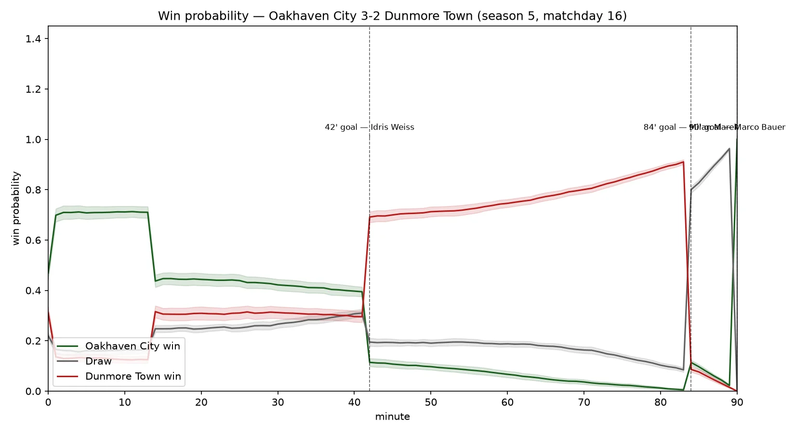
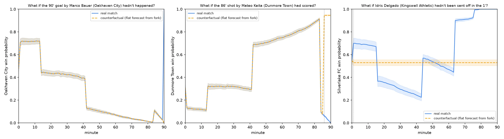
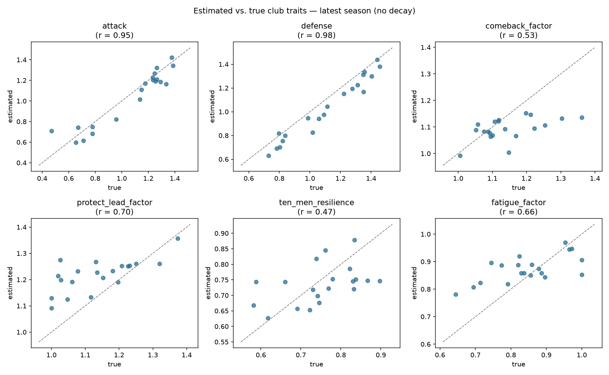
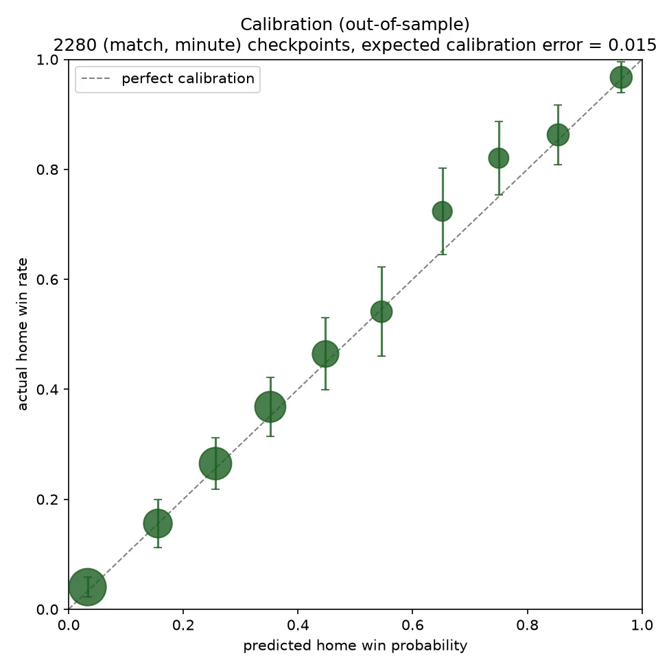

Case study
Sliding Doors
A counterfactual match-intelligence tool: re-simulate a football match hundreds of times with one moment changed, a goal, a red card, and measure how much that moment actually shifted the win probability.
Microsoft x Premier League hackathon · October 2026 · solo entryProblem
Every fan has had the argument "if that goal hadn't gone in, we'd have won," and it always stays an opinion. The Microsoft x Premier League "Inside the Game" hackathon asked for a tool that ingests match events, interprets them into stats, explains what a moment meant, and renders that for a fan, built on Microsoft's AI stack.
I entered solo, which meant learning Microsoft Agent Framework and Azure AI Foundry from scratch under a hackathon deadline, on top of building the simulation itself.
What I built
- A synthetic 20-club league simulator, 5 seasons, fictional clubs and players, that generates matches minute by minute (shots, goals, red cards, day form, pressure spells)
- Trait estimation that recovers each club's hidden attack/defense/etc. from shot-level data using weighted Poisson regression
- A vectorized Monte Carlo win-probability engine: replays the rest of a match thousands of times from any point in the game
- A counterfactual engine: change one real event, a goal, a missed shot, a red card, and re-simulate forward for a fair before/after
- A two-agent AI layer on Microsoft Agent Framework: an Analyst that calls tools against the simulation, and a Narrator that writes the fan-facing answer using only numbers the Analyst's tools actually returned (English or Hebrew, fan or analyst tone)
- An interactive Streamlit UI: scoreboard, win-probability chart with turning points marked, a "What if...?" panel, and a match recap
All match data is 100% synthetic: a fictional league, fictional players, no real clubs, players or logos anywhere in the code, data or UI.
Result / status
Deployed and working on Azure Container Apps. These are the real validated numbers from the test suite, not estimates written for this page:
Screenshots





Stack
Python, Streamlit, pandas, NumPy, statsmodels, Plotly, Microsoft Agent Framework (agent-framework, via agent_framework_openai), Azure OpenAI on Microsoft Foundry (gpt-5-mini), Azure Container Apps for deployment.